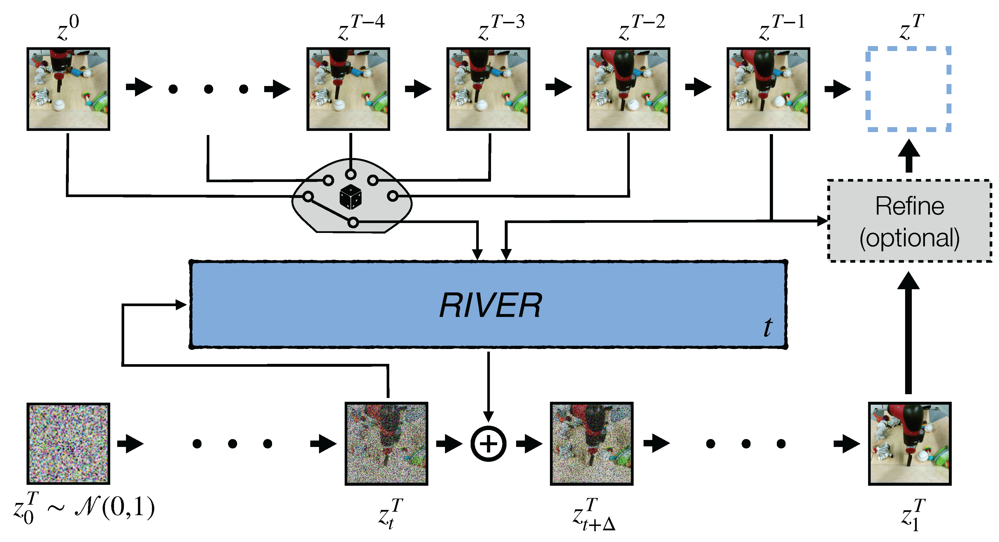
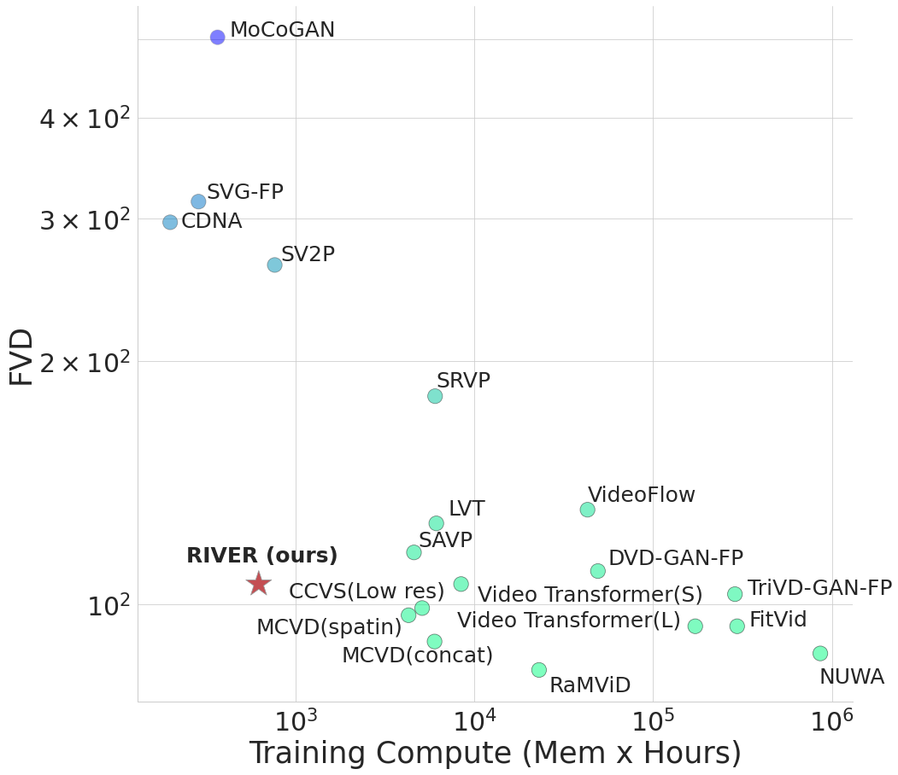

Abstract
We introduce a novel generative model for video prediction based on latent flow matching, an efficient alternative to diffusion-based models. In contrast to prior work, we keep the high costs of modeling the past during training and inference at bay by conditioning only on a small random set of past frames at each integration step of the image generation process. Moreover, to enable the generation of high-resolution videos and to speed up the training, we work in the latent space of a pretrained VQGAN. Furthermore, we propose to approximate the initial condition of the flow ODE with the previous noisy frame. This allows to reduce the number of integration steps and hence, speed up the sampling at inference time. We call our model Random frame conditioned flow Integration for VidEo pRediction, or, in short, RIVER. We show that RIVER achieves superior or on par performance compared to prior work on common video prediction benchmarks, while requiring an order of magnitude fewer computational resources.

The inference pipeline of our model. In order to generate the next frame (top-right), we sample an initial estimate from the standard normal distribution (bottom-left) and integrate the flow ODE by querying our model at each step with a random conditioning frame from the past and the previous frame (top). We omitted the encoding/decoding for simplicity.

RIVER achieves an ideal trade-off between quality of generated videos (measured via FVD) and compute needed to train the model (measured as the product of memory and training time). This makes research on video models more easily scalable.
Long Video (120 frames) Generation Results on CLEVRER
Even though we can't quantitatively compare our generation results with other methods (due to the mismatch in spatial and temporal resolution of the data the models were trained on),
we can clearly see that the dynamics and interactions of the objects are captured better by our model.
DIGAN
StyleGAN-V
VIDM
RIVER (ours)
RIVER (ours) - slowed down by 4 times
Acknowledgements
The website template was borrowed from VIDM.